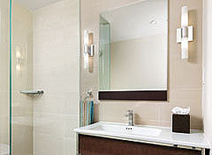

9/18/12
4 Buyer Incentives that Sell Homes
By Tara-Nicholle Nelson | Broker in San Francisco, CA
On today’s market, it’s pretty easy for a seller to find themselves in a serious state of stuck: home stuck on the market with no bites from buyers, and family stuck in the home until the home sells. And that doesn’t even account for the feeling of stuck that comes from having gone just about as low as you can go on price without turning your transaction into a short sale. If you’re trying to sell, and you’ve lowered the price but still find your home struggling to compete against a bunch of other, similiarly priced homes with similar features, selling can seem difficult at best, impossible at worst.
The worst part of this particular flavor of stuck is the feeling that the whole situation is out of your control, that there’s nothing within your power that will move your home off the market. You’ve already painted the place, replaced the carpet, tricked out the curb appeal and lowered the price as far as you can go. So what else is a seller to do?
Offer incentives.
Incentives are perks - they can be big or little - that a seller offers to their home’s eventual buyer. The most outlandish incentives are the ones that make the headlines, like the Ferrari one Malibu owner threw in with the sale of their condo last year, or the year’s worth of cookies that actor George Hamilton reportedly negotiated into the sale of his home from a bakery owner. But the incentives with the most power to get your home sold tend to be much less exciting perks thatactually fill a real need the average home buyer has.
Here are four basic, incentives you should consider offering if you’re having a hard time getting your home sold:
- Interest rate buy-down. When you hear sellers say they will “pay points,” what they are doing is offering to award the buyer a certain number of percentage points of the sales price, which will, in turn, be paid to the buyer’s lender as discount points that bring the buyer’s interest rate down. For the buyer, this is a big deal, as it decreases the pressure they feel to guess the right day to lock in their interest rate (a common source of serious stress among buyers), and sends the message that if they buy your home, they’ll automatically beat the market rate. And what buyer doesn’t want that?!
Seller-paid rate buy-downs also save buyers money on their monthly payment over the entire lifetime of their loan, and the seller-paid points are usually tax deductible, to the buyer, the next time they file taxes. You can see why these incentives are so powerful at attracting buyers!
- Closing cost credit. Many buyers trying to break into the market while prices are low are already scraping the bottom of their savings account barrels to come up with their down payment money. With most home loans, the buyer will have to come with anywhere from 3 to 6 percent of the loan amount, in cash, on top of their down payment, to cover closing costs like loan fees, escrow services and title or mortgage insurance. (And strangely enough, the buyers putting the 3.5 percent minimum down payment on an FHA loan are likely to have to come up with the higher end of the closing cost range, 6 percent, to cover their mortgage insurance.)
Some smart sellers (and their agents) include in their home’s listing and marketing materials the offer to pay a credit of 3, 4, 5 or even 6 percent of the home’s sale price at closing, to defray the buyer’s closing costs. A closing cost credit is a great financial help to buyers and a strong differentiator that can make your home much more attractive than nearby listings. Your listing agent can help you run the numbers on how much of a credit you can afford to offer, and how to make an overall package - listing price and credit - that will be maximally magnetic to prospective buyers.
- HOA dues credit. If you are selling a home that is in a homeowners’ association (HOA) that charges monthly or even annual dues, then surely you recall buying that home and being overwhelmed at the prospect of going from rent being your sole monthly housing expense, to having a laundry list of expenses starting with your mortgage, including property taxes and insurance and then having HOA dues as the unpleasant cherry on top.
One way to overcome that concern in the minds of buyers and to differentiate your unit from all the other, similar units for sale in your complex is to offer a credit at closing that covers the buyer’s HOA dues for 6 months, a year, or even longer. Talk with your agent about how to do this strategically, in a way that will offer the maximum lure for buyers but will not run afoul of any guidelines for seller credits imposed by the buyer’s lender.
- Broker incentives. Some savvy sellers who can’t afford to offer buyers several percentage points’ worth of the proceeds of sale toward closing costs take a different route, offering to pay a bonus percentage point (or more) in incentives to the eventual buyer’s broker or agent - on top of the commission, rather than to the buyer themselves. Over 90 percent of buyers who are ready, willing and able to buy a home on today’s market are represented by a broker. And brokers have to sort through sometimes hundreds of pretty similar listings to decide which ones to show a buyer any given Sunday.
Offering a broker’s incentive makes your home stand out among all those listings to the brokers and agents who put buyer’s property tours together. While these aren’t “buyer incentives,” strictly speaking, but they do operate to boost the number of buyers that come view your home - in turn, boosting your home’s likelihood of getting an offer.
P.S. - You should follow Trulia and Tara on Facebook!
9/17/12
5 simple secrets to updating your bathroom
By Mary H.J. Farrell | Consumer Reports – Tue, Sep 11, 2012 6:30 PM EDT
Bathrooms have replaced kitchens as the most remodeled room in the house, mostly because they're smaller and don't need all those pricey appliances. But poor planning can cost you more than you bargained for.
To help you find the best materials, Consumer Reports recently tested sinks, countertops, toilets and flooring. We also talked to designers and remodeling professionals who gave us some tips on how to save and how to splurge.
Streamline the vanity. Double sinks have long been popular, but having just one gives you more counter space, saves the expense of an extra sink and faucet and because there is less plumbing involved, gives you more storage space in the cabinet.

(Photo: Consumer Reports)
Choose soothing colors. Updating the accessories, such as towels and the shower curtain, and repainting the walls is an inexpensive way to bring color into the bath. Although stay away from dark green, it can give your skin a sickly hue.
Take a shower instead. The trend for huge whirlpool baths has cooled, mostly because homeowners realized they rarely used them. Large showers are becoming more popular, especially because they provide easy access and universal use for aging baby boomers.
Conceal the toilet. Setting the toilet apart from the rest of the bathroom with a partial wall or door of its own provides privacy and also makes for a more attractive bathroom. Even if your toilet is one of those new water-saving models.
Layer the light. Overhead fixtures can cast shadows on your face when you're trying to shave or apply makeup. Instead, create layers of light, including wall-mounted sconces or other vertical fixtures on either side of the vanity.
9/10/2012
Seek Greater Enlightenment
By Melissa Dittmann Tracey
RealtorMag.Realtor.org
July/Aug 2012
You want to present your listings in the best possible light. So be careful not to discount the importance of, well light. Many real estate professionals advise their clients to flip on the light switches before a showing, but often the advice stops there. Proper illumination makes a home feel warm, inviting, and even larger and more open.
“Some homes, when they’re on the market, can feel so dim and dark,” says Jennifer Ames, a broker associate with Coldwell Banker Residential Brokerage in Chicago. “Just changing the light bulbs can be like putting in fresh coat of paint on the walls. It can really freshen up the look and make a huge difference.”
A recent survey by real estate marketing provider Home Gain that rated top do-it-yourself home projects suggests that “lightening and brightening” a home can offer the second biggest return to sellers at resale (behind the No. 1 category “cleaning and decluttering”). A $424 upfront investment in upgrading lighting fixtures and cleaning windows can potentially offer a nearly three-fold return on investment at the time of resale, according to Home Gain’s 2012 Home Improvement Survey.
How can you present your homes in a better light? Ames and home staging experts from Let’s Move LLC www.LetsMoveLLC.com weight in with their best tips.
- Use clear light bulbs. Place new incandescent light bulbs in all fixtures so they don’t risk burning out in the middle of a showing. Choose clear light bulbs over opaque for a cleaner look. Also, avoid mismatched bulb types. “They are uncomfortable to the eye and can make a room look chaotic,” Ames says. She suggests using the same wattage and color temperature (which describes the visible warmth and coolness of light sources).
- Reconsider energy-efficient bulbs. Ames advises clients to save the energy-saving compact fluorescent bulbs for after the move because they emit ha harsh glare compared to standard incandescent bulbs. While a home is being shown, she recommends using halogen flood bulbs, when possible, for best overhead lighting that brightens a space. They are more energy-efficient that incandescent flood light bulbs. But before you swap out bulbs, make sure that you check the maximum lamp wattage and type of rating for the fixture, since halogen bulbs operate at very high temperatures. If you opt for CFLs, note that they come in two types: soft white and white. Soft white is preferable and more natural, suggest Kim McMahon founder of Let’s Move LLC and Let’s Organize LLC in Fulton, Md., and president of National Association of Senior Move Managers.
- Watch the wattage. Use the highest wattage possible for fixtures to brighten the home, but there may be some exceptions. For example, Ames recommends using 30-watt bulbs in wall sconces in the bathroom to create a softer light setting. Higher wattage bulbs can give a harsh glare in the bathroom, she says.
- Clean light fixtures. Brush off dusty lamp shades, scoop up the dead flies lingering inside the fixtures, and remove any spider webs dangling from chandeliers, says home stage Suzanne Cash, a project manager at Let’s Move and Let’s Organize. When all the lights are turned on in a home, everything becomes more exposed- including all the places your sellers may have forgotten to clean.
- Brighten the exterior windows. Take more advantage of natural light by removing window screens; this can make a home look brighter from the inside and out, says McMahon. And don’t forget to wash those windows, too.
- Replace dated light fixtures. Brass fixtures are passé. Swap out dated models for a more modern look featuring oil-rubbed bronze or brushed nickel, for example. Big-box and discount retailers offer plenty of affordable lighting options. To keep costs down, just change the fixture and leave the wiring in place.
- Add light. “Don’t just rely on overhead lighting,” Ames says. Soften the look by adding wall scones or decorative lamps to side table and nightstands. For a dark kitchen, consider buying battery-operated extra source of light, Cash says. Or use them to illuminate a dark closet shelf.
- Add a mirror. Mirrors can be used to bounce light and make a home look brighter and its walls higher. Place a mirror opposite a lighting fixture to project more light into a room or to catch natural light entering through a window. Mirrors also work well in a dark area of a home and “give the felling of a window, even if there isn’t one,” Cash says.
- Open the windows. Remove draperies that prevent natural light from flowing in, McMahon says. “[Curtains] are not in style or considered attractive right now,” she says. Instead, use window coverings with clean lines, such as wood blinds. Valances and side panels of curtains can “eat up space and light,” she says. If sellers insist on keeping up the draperies, make sure they are pulled away from the window, and if necessary tied back, to let in more light. Lift up roller shades or Venetian blinds all the way, or tilt them open, but don’t let them half-way up, which creates a messy look, Cash says.
- Brighten your listing photos. The lighting in the photos you capture can greatly influence buyer’s perceptions too. “Its counterintuitive but a lot of people think you should take pictures of a home when the sun is pouring in the windows,” Ames says. “But when that happens, light floods the room and the contrast is too great,” so the photo looks darker. Instead, Ames suggests, take interior photos at dusk or on overcast days to get more balanced light in your photos. On the other hand, for the best exterior photos, shoot the home in the backdrop of a full sun.
9/4/2012
9 Ways to Make a Kitchen Look Swank for Less
Costs for even relatively moderate kitchen redos can run well into the tens of thousands of dollars. Here are a few ways to enhance this focal point of a home on a budget.
BY BARBARA BALLINGER
According to Remodelingmagazine’s latest Cost vs. Valuesurvey, the average price of an upscale kitchen redo hovers about $113,000. Even the cost of a mid-range overhaul is a whopping $58,000.
However, sellers are rarely willing to invest the kind of time and money it takes to do that kind of remodeling job, especially one they’ll barely use before they move. But there are affordable alternatives to make this much-used gathering spot more appealing, both aesthetically and functionally. Here arenine easy-to-implement, easy-to-copy ideas for you to share with sellers and buyers. Tell them to try one, two, or perhaps all of them!
- Reuse existing elements in the kitchen when possible. “We try to take a hard look before we start any renovation to see what can be salvaged,” says architect Talia Braude, AIA, LEED AP, whose firm Braude Pankiewicz Architects is based in Brooklyn, N.Y. For example, when Braude found floor joists that were too damaged to be structurally sound, she reused them as kitchen shelves, for which they worked perfectly.
- Go with affordable cabinets, possibly a line with simple maple, cherry, or oak rather than exotic imported wood or lacquered fronts. Also, opt for pressed rather than solid wood interiors and shelves to pare costs. Because cabinets often represent 50 percent to 60 percent of a remodeled kitchen’s cost, saving here brings down the price, says Lou Manfredini, Ace Hardware’s “Home Expert” based in Chicago. But if possible, spend a bit more on quality hardware that will eliminate wear and tear when opening and closing doors and drawers. One good place to start looking for affordable cabinets is at IKEA, says Braude, which her client Orli Belman did when remodeling a kitchen in her Los Angeles home. Belman saved even more by purchasing cabinets during IKEA’s kitchen sale. Other alternatives include replacing the doors (and reselling the old ones), or repaint cabinets with a product like Ace Hardware’s Cabinet, Door & Trim Paint, an alkyd-based semi-gloss finish that yields a smooth, factory-like finish.
- Appliances are another huge cost factor in redoing a kitchen, and stainless-steel name brands are among the biggest offenders. Besides opting for less expensive black-and-white fronts and going with cheaper brands, Web sites like Craigslist and Overstock are good resources for new or little-used items others are trying to get rid of. Belman went those routes and found a double oven and refrigerator drawers on Craigslist, each for $400, when a construction project stalled. She estimates each would have cost about $3,000 retail. She also found an inexpensive but good faucet at Costco and discontinued Martha Stewart light fixtures on another Web site.
- Changing a countertop or several can add an instant fresh look, but instead of replacing them with high-end granite, marble, or manmade quartzes, Manfredini suggests covering tired laminate tops with RustOleum’s highly durable Countertop Transformation product, a three-part system that transforms them into look-alike granites in five different colors. Belman also found affordable butcher-block tops at IKEA.
- A new backsplash can make a huge difference, and there are many self-adhesive tiles that are easy to install for DIY consumers, including those with the hot metal look in vintage or modern patterns and a host of sizes, shapes, and colors, Manfredini says. Savvy home owners also should consider contacting manufacturers, many of which offer overstocked goods for far less. For instance, Heath Ceramics has been known to sell them for 75 percent off retail at its factory showroom in Sausalito, Calif.
- New lighting is one of the easiest switches to make and offers a big payback since it can make a kitchen look larger and highlight its best features, from a great island to kitchen table to new backsplash. Advise homeowners to locate new lighting under cabinets where main tasks are performed, within cabinets, especially glass-fronted ones, to show off cabinets and attractive contents, and over a dining table or island where one great fixture will shine, literally. When possible, opt for compact fluorescent or light-emitting diode bulbs to conserve energy, even though the initial price is higher. And if the bulb’s compatible with dimmers, it’s a great way to vary moods.
- Though replacing an entire floor can be costly, time-consuming, and expensive, there are handsome options that will last and won’t break the bank. Durable and affordable options include Marmoleum, a sustainable linoleum, which no longer resembles what your parents or grandparents had but comes in hot colors and textures; old-growth bamboo that’s denser than new variations; and cork, another natural material that’s easily repairable if dings (or worse) occur. If a room is partly remodeled, often the floor can be saved with patching and restaining rather than replacing all of it, Braude says.
- Buyers should consider redoing the layout if it doesn’t work, then save elsewhere rather than the reverse, Braude advises. If they install all new cabinets and appliances, but keep the same old, poorly functioning kitchen plan, they probably won’t be pleased. It’s better for them to gain a new layout and budget elsewhere — maybe keep cabinets — and later replace them, she says.
- Even when budgeting, home owners shouldn’t forget to add in one or two splurges for a focal point and some kind of “wow” element to raise the level of the renovation, even if it’s a budget one, Braude says. Examples include handcrafted tiles with beautiful finishes, colors, and patterns, and a great island countertop, perhaps fashioned from a gorgeous CaesarStone as Belman and her husband chose to add.
8/30/12
Create Kitchen Comfort
By Jim Dulley
scliving.coop
Aug 2012
Q: My kitchen gets uncomfortable warm during the summer, even with air conditioning. How can I remodel the kitchen to keep it comfortable and efficient?
A: A kitchen remodeling project is an excellent opportunity to improve your home’s efficiency. As you plan the renovation, your goal is to make sure you use as little heat as possible to prepare your meals. You can do this by following two smart strategies – developing an intelligent kitchen layout and installing high-efficiency appliances.
The kitchen Triangle
When designing the floor plan for your new kitchen, use the “kitchen triangle” concept for both efficiency and convenience. The three areas used most often are the sink, range, and refrigerator. Try to locate these in an equilateral triangle. If your kitchen is relatively small, you may need only a step or two to get from one to another.
It might sound obvious, but don’t put hot appliances, such as the range or dishwasher, immediately next to the refrigerator. Even though a refrigerator has heavy wall insulation, it will use more electricity to stay cold if there is a range beside it roasting a turkey for hours. Likewise a dishwasher gives off warm, humid air, which reduces the refrigerators efficiency.
Do not place the range under a window that is used for natural ventilation. Even a small breeze can carry away the heat that should be going into the pot. The space under a window is a great place to locate a sink, offering natural lighting and an escape from warm, humid air without running an exhaust fan.
Choosing efficient appliances
The refrigerator and range/oven are the two greatest energy consumers in the kitchen, so look for the most efficient models you can afford. For all appliances, compare efficiency information on the yellow energy label, and look for Energy Star designation is earned by appliances that meet efficiency guidelines set by the federal government.
When shopping for a refrigerator, choose the smallest model that satisfies your needs. Refrigerators with more surface area absorb more heat from the room, and the compressor has to run longer to keep it cold inside. AS a rule, top-freezer designs are the most efficient, but consult the energy label for exact comparisons.
Choose your dishwasher and range based on the energy label and the features you need. A range with a convection oven will cook more efficiently than a standard oven. The up-front cost is higher, but you’ll see savings in the long run.
The Energy Star label also comes in handy when identifying efficient vent hoods for ranges. Look for a range hood with about 50 cfm (cubic feet per minute) of airflow per linear foot of the range top. Install it no more than 30 inches above the cooking surface. If the range hood is too small or too high, it will run much longer to vent the hot, humid air – if it can at all.
8/27/12
25 Quick, Cheap and Easy Home Sale Tips
If you want to get a home sold quickly and inexpensively, you should review these sales and design tips.
AUGUST 2012 | BY BARBARA BALLINGER
Even with rising values and reduced inventory in certain markets, selling a home remains challenging. Buyers expect not just a shiny new stainless sink but pruned hedges, freshly painted walls, glistening hardwood floors, and more. Making everything look great can cost a pretty penny, and many sellers won’t be able to afford all the suggestions you might make.
You can help them prioritize based on the condition of what’s needed most, what buyers in the area typically request, what competing houses offer, and — of course — cost. Here’s a list of 25 affordable, easy-to-make changes from top design and real-estate pros:
- Add power outlets with USB ports in rooms that lack them, especially in the kitchen, bathrooms, and bedrooms where they’re most needed. “Younger, more tech-savvy couples and individuals love them,” says Tyler Drew, broker and property investor with Anubis Properties Inc. in Los Angeles.
- Eliminate acoustic popcorn-style ceilings since they look dated and tacky.
- Remove exposed posts and half walls. Today’s buyers want more space, and partial walls and posts gobble up room. The only walls that should remain are those that offer privacy or conceal electrical wires or plumbing stacks.
- Update wiring for the Internet and flat-screen TVs. You don’t have to run CAT-5 through walls, which can be costly and require opening and closing and repainting walls. Instead, find a place to put a wireless router, Drew says.
- Clean carpets and wood floors since they’re often the first part of a room that buyers check out; you don’t need to replace them unless they’re in terrible shape. A good carpet steam cleaning or wood floor waxing can be relatively inexpensive, sometimes less than $200.
- Expand a small kitchen to make it work better and look larger. Two quick fixes: Change the backsplash by adding mirrors, stainless steel, or paint, which will introduce light and views; and add an island, which requires only 30” between counters and the island to pass through comfortably. If there’s not enough room for an island, bring in a rolling cart with pull-out shelves underneath and a wood top, says Libby Langdon, an interior designer, author, and expert with Liebherr Refrigeration..
- Clear out and clean a garage, a big selling feature.Power wash the floor or paint it if it’s in bad shape, remove dated cabinets, and remove all junk that’s been stored there, so prospects can see how much space they would have for their stuff.
- Change out corroded or dented door knobs and levers. The replacements don’t have to be expensive but they should look new and clean, Chicago architect Allan J. Grant suggests.
- Pay attention to landscaping, which can add 7 to 15 percent to a home’s value, according to HabitatDesign.com principals Jessy Berg and Bonnie Gemmell. Focus on mowing grass, removing crab grass, and eliminating dead plants and tree branches. “I’d rather have dirt and the potential to paint a picture for the buyers’ mind than a backyard full of dead plants,” Drew says. But if you have extra funds, consider Sacramento, Calif.-based landscape designer Michael Glassman’s ideas: Add lots of seasonal color through blooming annuals and perennial plants and remove problems like too much noise from traffic or neighbors by installing an inexpensive fountain with trickling water.
- Paint exterior windows, doors, gutters, downspouts, and trim, then go inside and paint the home’s trim, doorways, and walls that are in need of freshening. Don’t worry about the colors but consider those that veer toward quiet and comfort such as Benjamin Moore’s Yosemite Sand, Edgecomb Gray, or Carrington Beige. “Gray is a hot interior color now,” says Manchester, Vt.-based designer Amy Thebault. Painting rooms other, lighter colors such as white, yellow, and beige help to bounce and reflect sunlight and use more natural and less artificial light, according to Chris Ring, vice president at ProTect Painters, a professional painting source. But in cooler months, Ring says, dark colors such as deep brown and blue absorb sunlight, thereby reducing heating costs. And don’t forget ceilings, which can be a “fifth wall.” You can improve them with paint or old-style metal or faux-metal tiles, says Beverley Kruskol, a general contractor and owner of MY Pacific Building Inc. in Los Angeles.
- Remove outdated wallpaper, replacing it with paint and preferably a neutral color, says Shelley Beckes, ASID, CID, a designer with Beckes Interior Design in Los Angeles.
- Remove, store, or discard excessive accessories on tabletops and walls and in cabinets. “Less is more, and you want the house to be seen by prospective buyers without the distraction of too many personal items,” Grant says. Some suggest following the rule of three: Leave out only three things on any surface.
- Get the house inspected before it’s listed to know its condition and identify any structural issues that could derail sales. Many problems can’t be detected by an untrained eye, including those in a basement, crawl space, or attic, says BillJacques, president-elect of the American Society of Home Inspectors. “There might be roof damage or a plumbing leak. Many inspectors take photos and provide a detailed report,” he says. “And if home owners have repairs made, they should be handled by a qualified licensed contractor, so the home owner can get problems corrected.”
- Outfit closets for extra storage to make rooms look larger and less cluttered, but don’t redo all closets and elaborately. Top contenders for redos are an entry closet for a good first impression, kitchen pantries where storage is key, and a linen closet to keep sheets, towels, and other stuff neat, says Ginny Snook Scott, chief design officer at California Closets Co. “The costs needn’t be excessive. A linen closet can be fitted with baskets and cubbies for between $500 and $600, an entry closet for between $400 and $700, each dependent on closet size and features,” she says.
- Tighten a home’s “envelope” to improve energy efficiency and savings. Put money and effort into well-insulated double-paned windows, sealed furnace ducts, energy-efficient appliances, the newest programmable thermostats, LED and compact fluorescent lights, and a smart irrigation box on a sprinkler to cut water usage, says Kate Latham, energy consultant withWattzON, a service based in Mountain View, Calif., which analyzes home energy use to pare costs. “After a few months, sellers can show buyers how costs have dropped. They also should put together a green manual to show which features they added,” she explains.
- Improve a home’s healthfulness by using paints and adhesives with low or no VOCs. Point out these changes to prospective buyers in another list or manual, Latham says.
- Use what you have, and arrange each room in a conversational way if possible. Don’t set all furnishings in a family room so they face a TV, since most potential buyers like the idea of an open-room milieu for socializing.
- Remove and replaced faded draperies, fabrics, and rugs, or leave windows and floors bare to avoid showing lack of attention, Thebault says. Slipcovers, which can cover worn furniture can also provide an affordable decorative feature, changed for each season, says Hugh Rovit, CEO of Sure Fit, a manufacturer and distributor of ready-made slipcovers and other accessories. The company’s slipcovers range from $49.99 to $149.99, based on fabric and treatment.
- Replace old, dated, or worn bedding. Before any showing, fluff up pillows and covers, and make all beds neatly. Affordable choices can be found at stores like Target and Web sites likeOverstock.com.
- Toss out old magazines. “You don’t want a People magazine from a year ago; it looks like nobody lives in the house or cares,” Thebault says.
- Check smells regularly. Besides getting rid of bad odors from pets and mildew, introduce nice fresh fragrances, but don’t go heavy on scents from candles. A light lavender or citrus spray is smart and inoffensive. Open windows before showings to bring in fresh air.
- Make rooms lighter and larger for showings with good lighting. Thebault prefers warm, cool colors rather than fluorescents. Additionally, 60-watt bulbs are a good choice, even though they’re not as energy-efficient.
- Go with plants rather than flowers indoors since they last longer, but either choice can add vivacity to a room.
- Pay attention to your bathrooms. Specifically, make sure you have freshly laundered towels, new soap in soap dishes, spotless mirrors, and no mildew in view.
- Be sure your house is priced competitively with the current market and homes in your area. In most regions, it’s still the No. 1 “fix” to sell quickly. Go a bit under the market price, and you may even bring forth multiple offers that are higher than expected, says Jill Epstein, a REALTOR® with Nourmand & Associates in the Los Angeles area.
8/23/12
IRS's top 10 tax tips for home sellers
Real Estate Tax Talk
By Stephen Fishman
Inman News®
From time to time the IRS releases tips designed to help people with their taxes. Some of these are quite useful.
Last week the agency released "Ten Tax Tips for Individuals Selling Their Home," (IRS Summertime Tax Tip 2011-15).
As a real estate agent or broker, it is not your job to give home sellers tax advice. Indeed, it is advisable not to, since you could end up getting sued if you give wrong advice.
Instead, refer sellers to this list of IRS tips. It's a good starting place for them to begin to understand this often complex area of tax law. You could even print it out and hand it to anyone who asks you about these issues.
Here are the IRS's top 10 tax tips for home sellers:
- In general, you are eligible to exclude the gain from income if you have owned and used your home as your main home for two years out of the five years prior to the date of its sale.
- If you have a gain from the sale of your main home, you may be able to exclude up to $250,000 of the gain from your income ($500,000 on a joint return in most cases).
- You are not eligible for the exclusion if you excluded the gain from the sale of another home during the two-year period prior to the sale of your home.
- If you can exclude all of the gain, you do not need to report the sale on your tax return.
- If you have a gain that cannot be excluded, it is taxable. You must report it on Form 1040, Schedule D, Capital Gains and Losses.
- You cannot deduct a loss from the sale of your main home.
- Worksheets are included in Publication 523, Selling Your Home, to help you figure the adjusted basis of the home you sold, the gain (or loss) on the sale, and the gain that you can exclude.
- If you have more than one home, you can exclude a gain only from the sale of your main home. You must pay tax on the gain from selling any other home. If you have two homes and live in both of them, your main home is ordinarily the one you live in most of the time.
- If you received the first-time homebuyer credit and within 36 months of the date of purchase, the property is no longer used as your principal residence, you are required to repay the credit. Repayment of the full credit is due with the income tax return for the year the home ceased to be your principal residence, using Form 5405, First-Time Homebuyer Credit and Repayment of the Credit. The full amount of the credit is reflected as additional tax on that year's tax return.
- When you move, be sure to update your address with the IRS and the U.S. Postal Service to ensure you receive refunds or correspondence from the IRS. Use Form 8822, Change of Address, to notify the IRS of your address change.
These tips can be found on the IRS website at http://www.irs.gov/newsroom/content/0,,id=104608,00.html
8/13/12
7 qualities of a top listing agent
REThink Real Estate
By Tara-Nicholle Nelson
Inman News®
Q: I'm preparing to list my home, and am starting to research listing agents to represent me. Besides being comfortable with my broker, what is the most important quality I need from them: negotiating skills or marketing skills? Both are very important to me. Frankly, I'm afraid of being "roughed up" by aggressive buyers in this market. --Michelle
A: You're spot on, Michelle. Both marketing and negotiating will be uber-important to have in the broker or agent you choose to list your home and get it sold.
Some might see marketing as the most important because, to put it plainly, if your home is not exposed widely and aggressively to prospective buyers, you'll never have the buyer viewings and offer(s) that must come in for you to even be faced with the high-class problem of negotiating the price and terms of a sale.
However, I don't see marketing skills as the requirement so much as your listing agent having a clear, comprehensive marketing plan that she is able to present to you with case studies or specimens of marketing she's done for recent properties somewhat similar to yours. It's critical that an agent's marketing plan for your home include details such as:
- how she would help you prepare or stage your property for sale;
- what her plans are for listing the property on the local multiple listing service(s) and publicizing it to other brokers;
- what onsite marketing she would recommend (i.e., yard signage and/or open houses); and
- how and where she would place your home's listing online, down to which sites she'd list it on and how many pictures she would include.
All essential!
But negotiating is essential too -- especially if you're very concerned about being bullied or taken advantage of.
Ultimately, though, when it comes to negotiations, you're going to be faced with making the ultimate decisions about what your bottom-line price and other terms are, including whether you're able to offer incentives like closing-cost credits or whether you can afford to contribute to any repairs the buyer's inspectors require.
What I suspect you want is to feel like you're protected, which will come from having an agent you trust who's "got your back," but also has the experience and knowledge of local standard negotiating practices and buyer psychology that comes only with experience -- and I mean recent experience getting homes sold in today's market climate.
I cannot emphasize enough that one efficient method of finding such a listing agent is to get referrals! Look to any family members, friends, work colleagues and neighbors whose homes are on the market now and ask them if they would strongly recommend their agent, and why.
If it's tough to get referrals, go into the various online real estate websites and their local discussion boards, and see which local agents are giving sensible, knowledgeable answers to consumers' questions in those forums. During your interview process, ask for references -- and call them! Speak to their recent past seller clients, to see how happy they were with the agents' service.
And I'd suggest you look for several other items beyond marketing and negotiating skills, or even trustworthiness and experience.
If I were listing my home one of my top priorities would be to find an agent who seems to have nailed the art and science of pricing their listings -- I'd want to find an agent whose listings regularly sold quickly, relative to other homes in the area, and for sales prices that were at, near or even above the asking prices.
That's an agent whose pricing recommendations you can trust, and an agent who likely has another strong skill you need: the skill of being able to have frank, tough conversations with their clients about what their homes are worth, and can support those list-price recommendations with facts and sound reasoning.
I'd also prioritize an agent with strong relationships: with their past clients; with mortgage professionals; with other agents in the area; with property preparation vendors (like stagers, painters, handymen/women, landscapers and such); with inspectors, engineers and contractors; and with local escrow companies.
And, if I were listing my home as a short sale, I would absolutely limit my listing agent search to agents who have a strong, proven track record of getting short sales closed -- ideally short sales that involved the same bank or banks as my mortgage lender.
This is by no means an exhaustive list of questions to ask and traits to seek in your listing agent candidates, but these are certainly where my top priorities would lie.
Tara-Nicholle Nelson is author of "The Savvy Woman's Homebuying Handbook" and "Trillion Dollar Women: Use Your Power to Make Buying and Remodeling Decisions." Tara is also the Consumer Ambassador and Educator for real estate listings search site Trulia.com. Ask her a real estate question online or visit her website, www.rethinkrealestate.com.